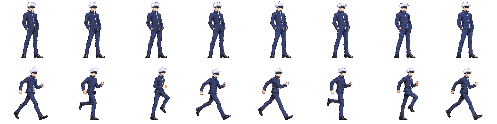

Needs review · recommend HOLD. Upright run height is corrected (214–221px versus 234–235px idle), and all frames fit x4..251. Normal scale gate reads ok, but the requested head tolerance of2% is unmet: median0.959, f6=0.914. The opposite-leg cycle is still ambiguous/repeated in several frames. All authorized image attempts used. No approval or production release.
Strict full Gojo pack exits1 on existing airLight3 and airHeavy. This preview contains only idle/run from an isolated strict 48-color pack (exit0); it is not the game atlas.
Heads sheet · Cast lineup with candidate · All native frames · QA and attempt record · PR72
